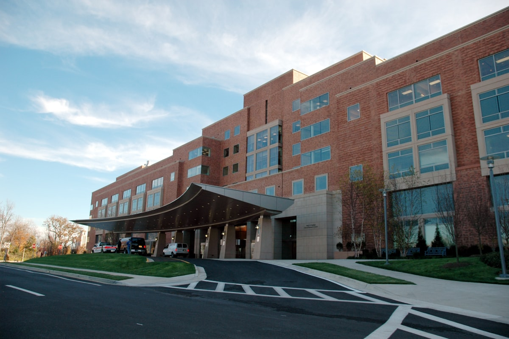
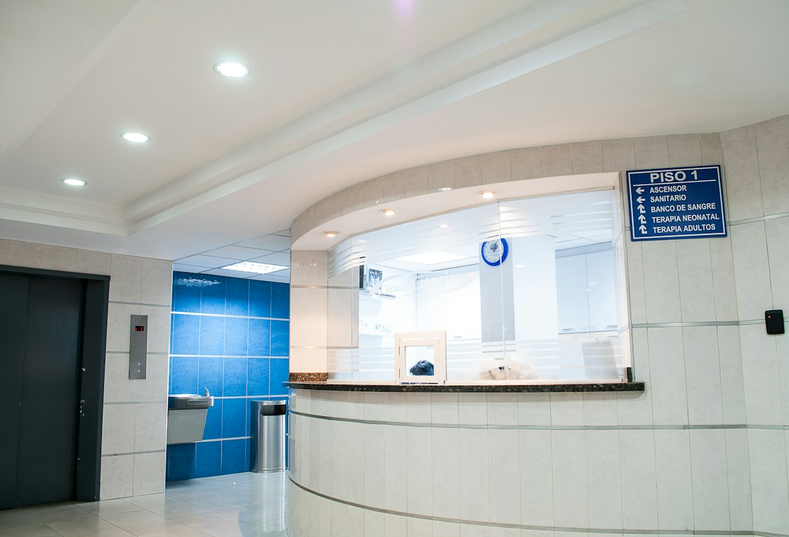

About
A hospital built for clarity, not corridors.
EUCLUS HOSPITAL opened in 1998 with a simple brief: specialist care should feel coordinated, humane, and easy to reach. We still run on that idea.

Who we are
Euclus is an independent teaching hospital in San Francisco. Eight departments share one campus, one electronic record, and one standard for how we speak with patients.
Our name comes from a blend of “eu” — well, good — and “clus,” a nod to gathering under one roof. The work is modern; the promise is old-fashioned: we will not make you repeat your story at every door.
Dignity — privacy, consent, and time to decide.
Precision — evidence first, with imaging and labs on site.
Stewardship — we explain costs before they surprise you.
Timeline
How we grew
Founded as a 48-bed community hospital with emergency and maternity services.
Opened the cardiac and imaging pavilion, bringing MRI, CT, and cath lab onto campus.
Launched the oncology infusion suite and multidisciplinary tumor board.
Completed the Harmony Medical Park expansion and online appointment booking for every clinic.
Campus
Everything you need without a second trip.
Harmony Medical Park holds outpatient clinics, diagnostic imaging, a 12-bed emergency department, labor & delivery, and inpatient wards. Parking is on-site. Public transit stops at the south entrance.
2400 Harmony Medical Park
San Francisco, CA 94107
Main +1 (415) 555-0148
